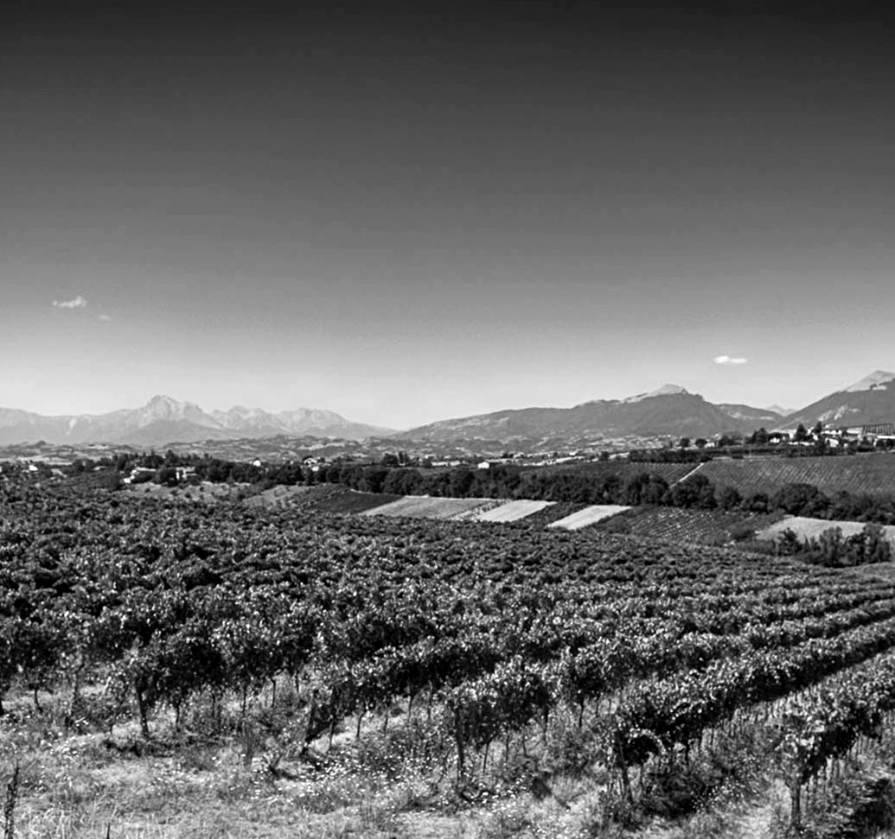
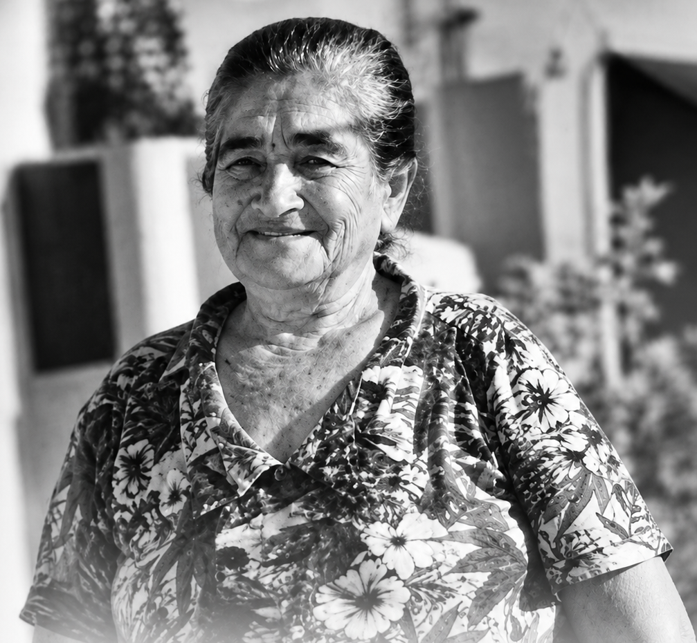
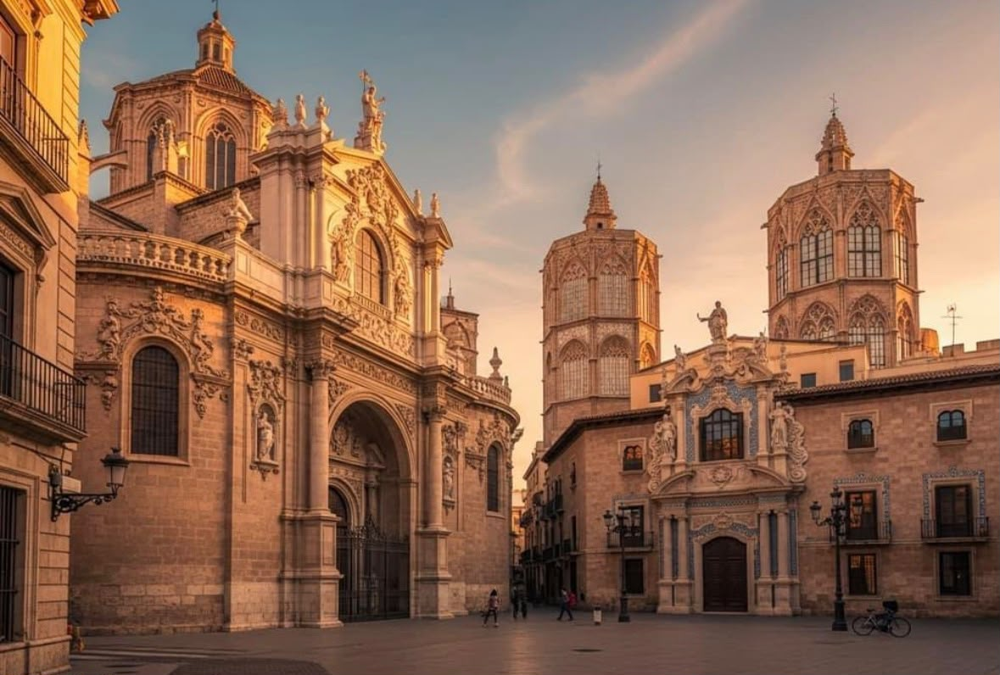
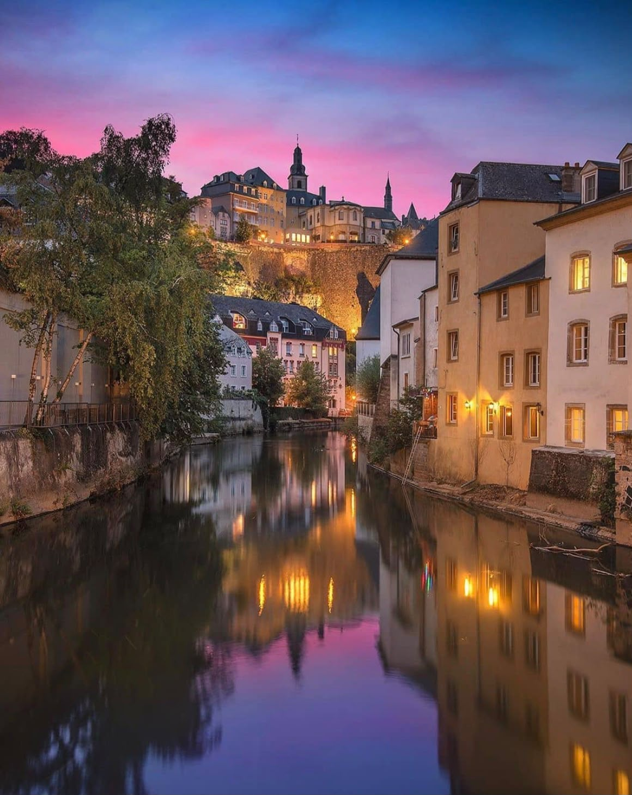
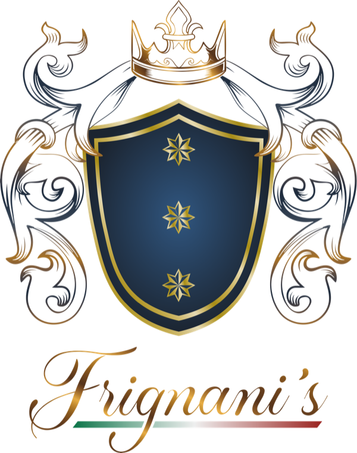

FRIGNANI’S — Uma herança italiana que atravessa gerações e continentes
Nossa história começa na Itália. Nossa tradição atravessa oceanos. Nossa visão conecta o mundo.
Ferrara · Emilia-Romagna
Nas terras de Ferrara, na Emilia-Romagna, norte da Itália, encontram-se as raízes da família FRIGNANI. Uma região de extraordinária tradição agrícola e gastronômica, onde, entre os séculos XVIII e XIX, gerações de agricultores cultivaram trigo, vinhedos e hortas, preservando valores familiares, saberes artesanais e os sabores autênticos da cultura italiana.

Gentila Frignani
Le nostre radici, sempre nel cuore.

Registros Históricos & A Travessia Atlântica

Valência, 1626
Baronia NobiliárquicaBaronia de Frignani e Frignestani
Valência, Espanha · Reinado de Filipe IVA história do nome Frignani atravessa séculos e fronteiras. Em 1626, em Valência, Espanha, durante o reinado de Filipe IV, foi criada a Baronia de Frignani e Frignestani, concedida a Gaspar Palavicino y Centurión, um registro histórico da presença do nome na Europa.
A Travessia Atlântica de 1891
29 de setembro de 1891 · Porto de Santa Cruz, BrasilEm 29 de setembro de 1891, nossos antepassados deixaram a Itália e desembarcaram no Porto de Santa Cruz, Espírito Santo, Brasil, levando consigo suas tradições, valores e o espírito empreendedor que atravessaria gerações.
Imigração italiana
Desembarque no BrasilVitória, Espírito Santo & A Trajetória Internacional
Vitória, Brasil
Comércio InternacionalSabrina Frignani · Visão Empresarial & Excelência
Trajetória entre o Brasil e a Europa · Itália & EspanhaMais de um século depois, em Vitória, Sabrina Frignani cresceu entre a herança gastronômica italiana e o dinamismo do comércio internacional. Sua trajetória profissional entre o Brasil e a Europa, especialmente na Itália e na Espanha, consolidou uma visão empresarial orientada pela excelência e pelas conexões entre diferentes culturas e mercados.
A Ponte entre a Itália e o Mundo
Sede internacional no coração da Europa · Luxemburgo

Hoje, a nova geração Frignani realiza simbolicamente o caminho de volta às suas origens europeias.
Com sede em Luxemburgo, no coração da Europa, nasce a Frignani’s Import & Export, unindo tradição italiana, experiência internacional e uma visão contemporânea dos negócios.
« Porque, para nós, a excelência começa na terra, nas mãos de quem produz e nas tradições que o tempo preserva. »
Alianças & Apoios Institucionais em Luxemburgo
Com o apoio da Federazione Italiana Cuochi – Delegazione Lussemburgo, da Câmara de Comércio Italiana em Luxemburgo e da Embaixada da Itália em Luxemburgo, estabelecemos pontes entre produtores, marcas e mercados internacionais, valorizando a autenticidade, a qualidade e a excelência em cada etapa, da seleção à entrega final.
Mais do que importar e exportar, acreditamos em preservar tradições, valorizar produtores e construir relações comerciais duradouras.

Das Américas à Europa.
Da Europa para o mundo.
« Uma história de família. Uma tradição que permanece. Uma visão que ultrapassa fronteiras. »